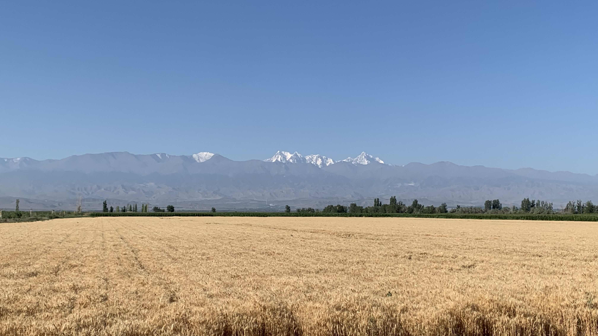
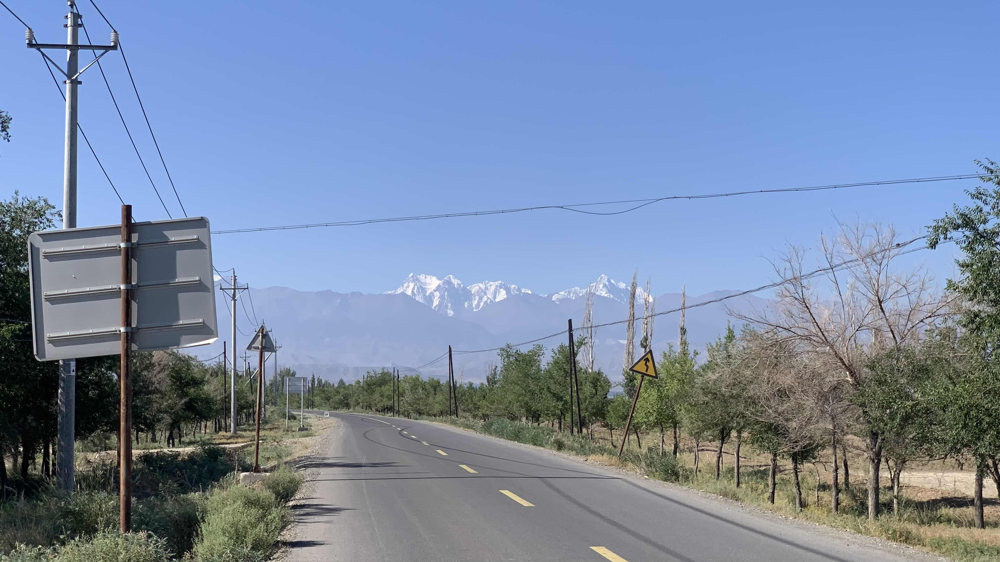
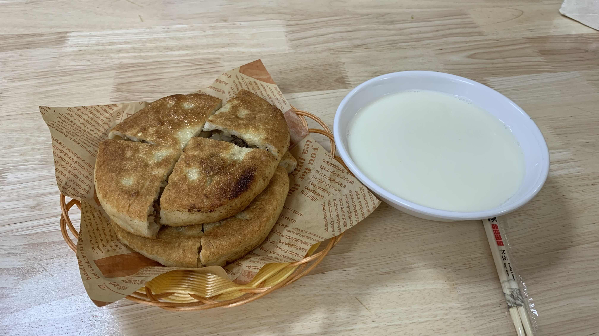
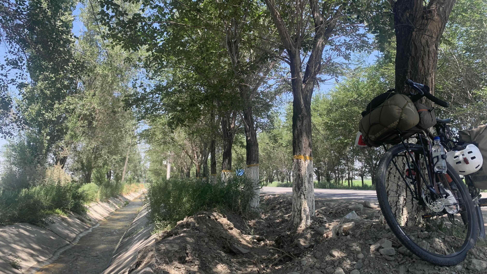
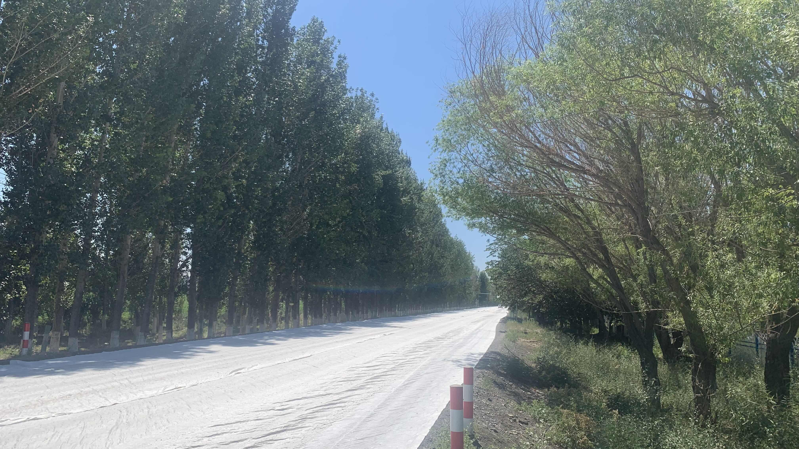
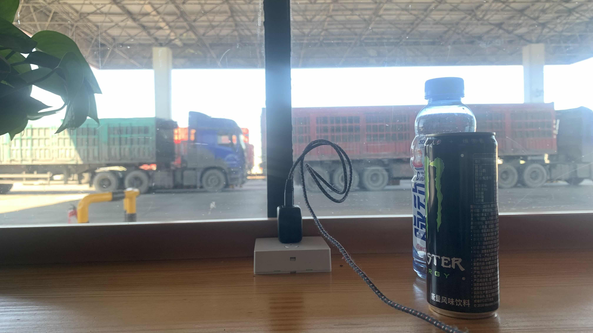
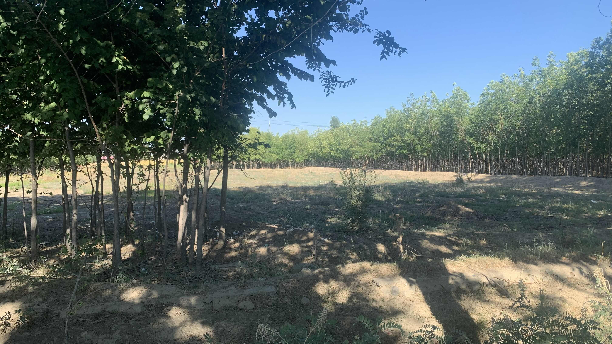
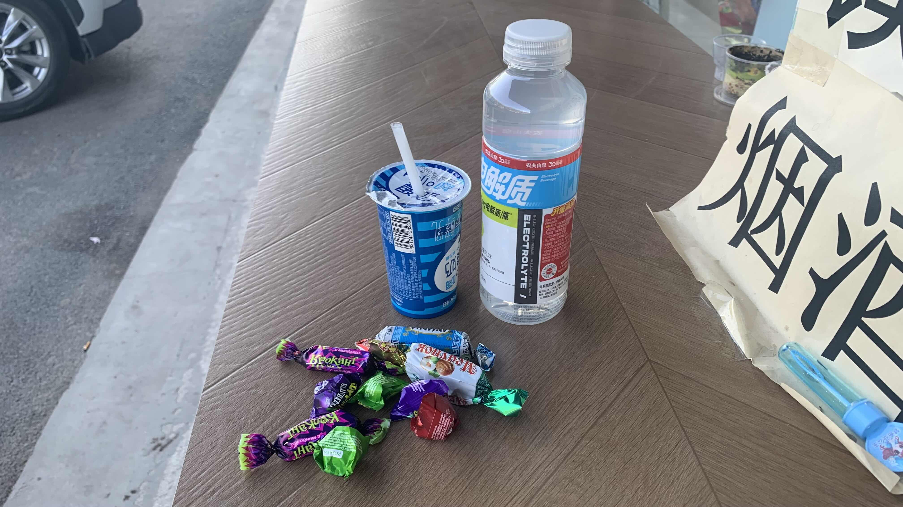
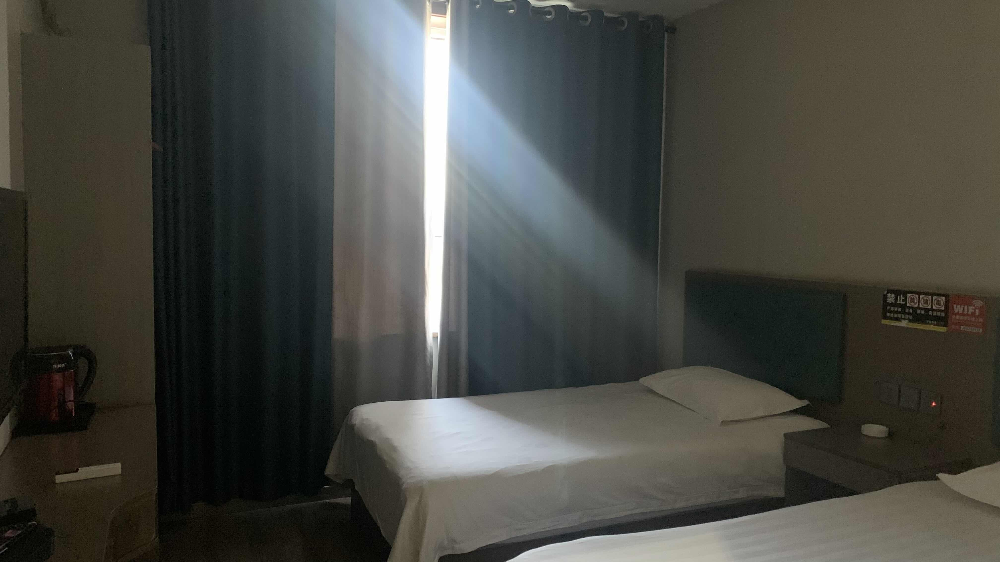
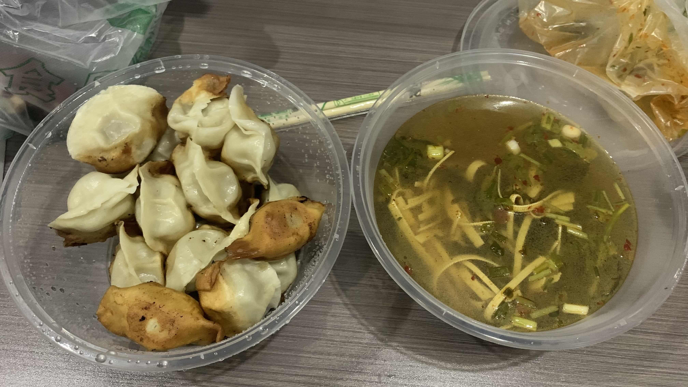

k-Day 130｜流水聲與過曝的午後
根據加油站員工的指示，往前走十公里後會看到另一個加油站，此時往右拐可以脫離卡車省道，走進較安全的鄉道。

彎進鄉道後朝著天山的方向走，明天應該就會抵達烏魯木齊。

由於台灣護照無法從霍爾果斯口岸進入哈薩克，離開烏魯木齊後，二十三號和我仍得翻越眼前這座七月中旬山頂積雪未融的天山。

還不是擔心的時候，更迫切的問題是早上十一點已經熱到無法騎車。停好車，走進早餐店點了兩份牛肉餅和一碗豆漿。餡餅皮是厚的，表皮煎得蠻好吃，肉餡加上碎洋蔥，和其他餐廳一樣屬於調味功能。老闆很客氣，主動邀請我使用店內的插座充電。

吃飽後依然很熱，又到隔壁買了雪糕和飲料坐在樓梯下的陰影休息。上車後騎了一段路，同樣找到陰影處準備躺到下午四點再出發。
在鄉道上發現一條水渠，剛好有行道樹遮陽。攤開睡墊躺在樹下，此處的流水聲讓我想起日本休息站裡智能馬桶的水聲。人類在廁所裡以文明幻覺提供此類撫慰身心的聲響確實有其必要。

下午四點準時出發，前方大面積修路。柏油路上覆蓋長長的白布，整條路都在反光。

策略是每十公里休息一次，進入加油站買了冰飲料，店員主動讓我坐在裡面吹冷氣。新疆的加油站商店都有這樣的休息區，可以充電，有些還有微波爐和熱水。

我低估了下午騎行的消耗，以為能直接抵達今晚的住宿點，因此整個下午幾乎沒有補充正常食物。剛才全身一陣乏力，心跳加速了幾下，趕緊躲到路邊休息。此處空氣不太好聞，有動物屍體腐臭的味道。把剛剛買的能量飲喝光，吃了一包能量膠。

沒多久抵達烏魯木齊旁邊的城市「阜康」。還沒找到住處，先到超市買了一瓶酸奶和電解質飲料。店員妹妹抓了一把糖果說要請我吃，老闆也很親切示意要幫我把二十三號扛上樓。明早出發前再來補充些水糧吧

在馬路對面找到一間80元的住宿，不給殺價，但環境很好。入住後攤在床上吹冷氣降溫。洗澡洗衣，一邊等待外賣晚餐。

嗯。煎餃和酸辣湯。
回看今天的照片，有一半都是過曝的。
今日花費： 早餐 9.9、早午餐 14、雪糕 5、飲料 10.5、飲料 7.5、晚餐 48.8、住宿 80元